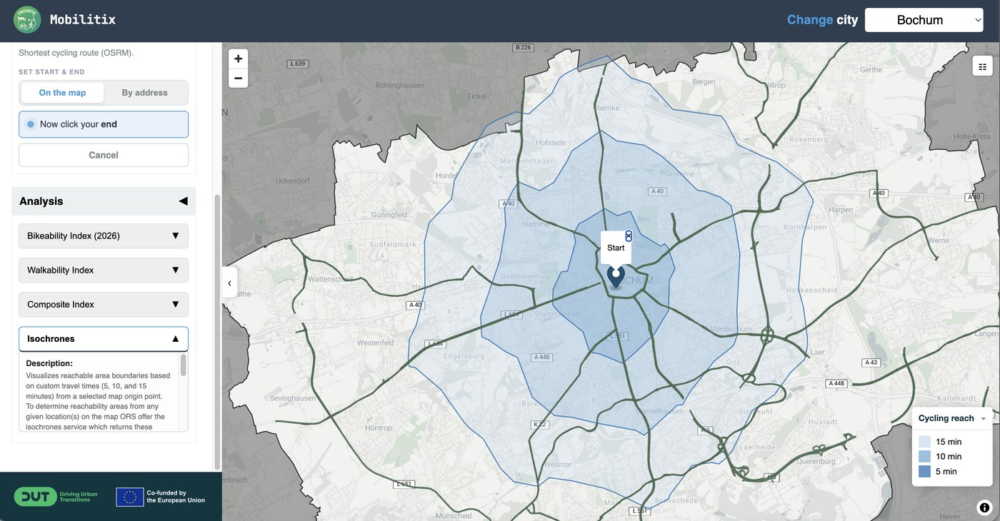
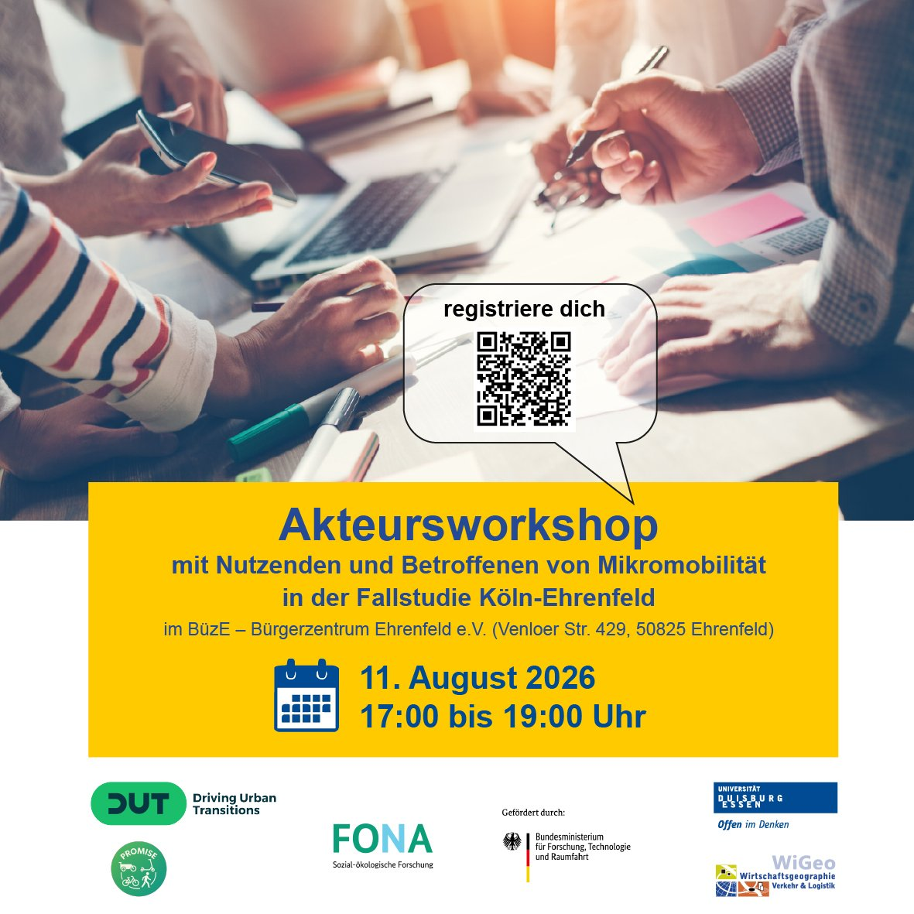
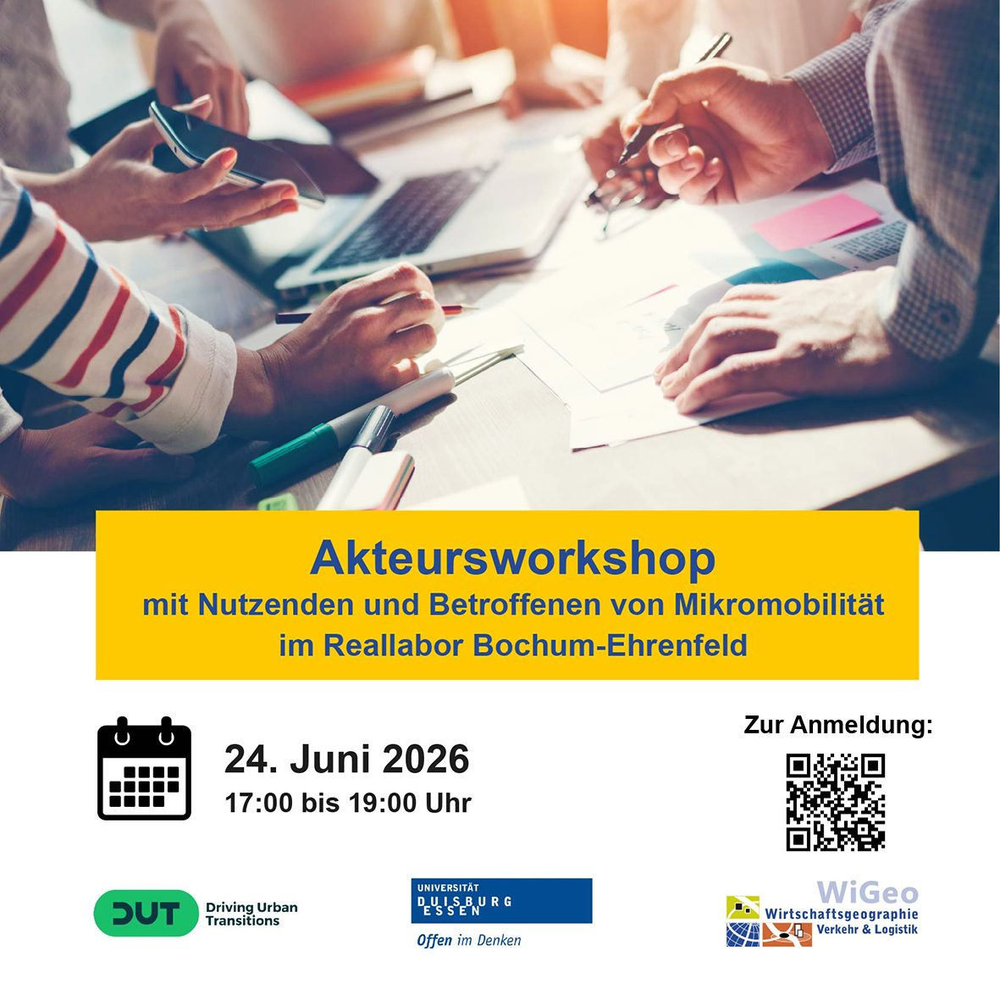
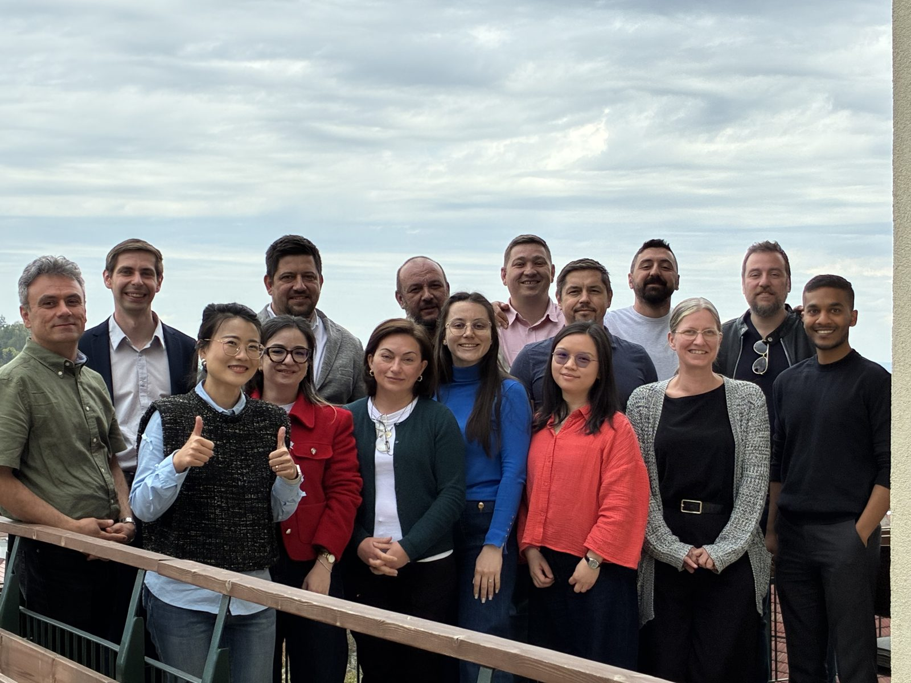
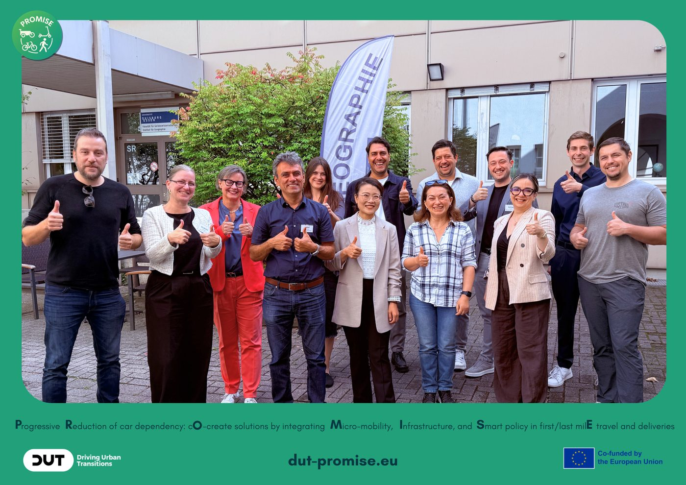
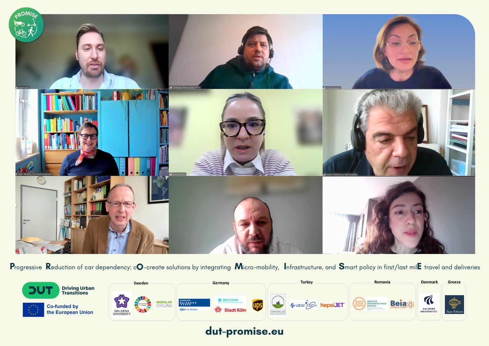

News
Latest updates, announcements and stories from the PROMISE partners and community.

News8 Sep 2026
Mobilitix: the PROMISE Micro-mobility Decision Support Tool demo is online
The Micro-mobility Decision Support Tool (MDST), developed in Work Package 3 under the lead of Aalborg University, is now available to explore online as Mobilitix. The interactive GIS demo lets users switch between cities, plot the shortest cycling route from any point on the map, and explore bikeability, walkability, and composite indexes alongside land use layers and reachability isochrones for 5, 10, and 15 minute travel times.

News11 Aug 2026
Stakeholder Workshop with Users and Affected Groups of Micromobility in the Living Lab of Cologne-Ehrenfeld
As part of the Cologne-Ehrenfeld case study, this German-language evening workshop hosted by the University of Duisburg-Essen brought together users and affected groups of micromobility, from cyclists and cargo bike users to planners and City of Cologne employees.

News24 Jun 2026
Stakeholder Workshop with Users and Affected Groups of Micromobility in the Living Lab of Bochum-Ehrenfeld
As part of the Bochum-Ehrenfeld living lab, this in-person stakeholder workshop brought together residents who use micromobility and those affected by it in everyday street life.

News28 May 2026
International Workshop: How Digital Decision-Support Tools Can Strengthen Urban Micro-Mobility
This online workshop invited researchers, urban planners and mobility practitioners to explore how digital decision-support tools can guide smarter micro-mobility planning, presenting the Micro-Mobility Decision Support Tool under development across PROMISE living lab cities.

News28-29 Apr 2026
PROMISE Onsite Meeting
The full PROMISE consortium came together in Brașov for two days of focused progress review and collaborative planning, closing with alignment on work-package timelines, milestones and priority actions for the year ahead.

News4-5 Sep 2025
PROMISE Second Coordination Meeting
For the second coordination meeting, the PROMISE team gathered at Universität Duisburg-Essen for two days of focused collaboration, with partner presentations, dedicated WP2 and WP3 workshops, and action planning for the year ahead.

News30 Mar 2025
PROMISE Project Kick-off Meeting
PROMISE officially kicked off as researchers, urban planners and AI specialists from across Europe came together for the launch meeting, sharing one goal: to reduce car dependency in European cities.